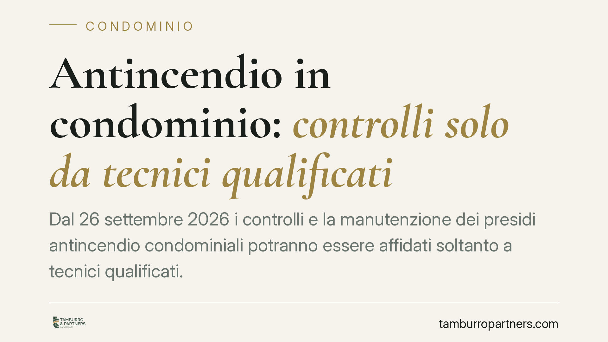

Antincendio in condominio: controlli solo da tecnici qualificati
Dal 26 settembre 2026 i controlli e la manutenzione dei presidi antincendio condominiali potranno essere affidati soltanto a tecnici qualificati. Il cambiamento riguarda ogni amministratore: dovrà selezionare imprese con personale abilitato, rispettare le periodicità e conservare il registro dei controlli. In caso di incendio, la violazione di questi obblighi può tradursi in responsabilità personale.

Il quadro normativo
La svolta nasce dal DM 1° settembre 2021, noto come "Decreto controlli", che disciplina manutenzione, controllo, sorveglianza e gestione degli impianti e dei presidi antincendio. Il decreto ha previsto un'applicazione progressiva: la parte relativa alla qualificazione dei manutentori entra pienamente in vigore il 26 settembre 2026.
Da quella data, le attività di controllo e manutenzione dei sistemi antincendio – estintori, idranti, rilevatori, porte tagliafuoco, impianti di spegnimento – potranno essere eseguite esclusivamente da tecnici manutentori qualificati, cioè persone che hanno superato uno specifico percorso formativo e il relativo esame secondo i criteri stabiliti dal decreto. La vigilanza sul rispetto delle regole resta in capo al Corpo nazionale dei Vigili del fuoco.
Per "presidio antincendio" si intende qualunque dispositivo o impianto destinato a prevenire, rilevare o contrastare un incendio. Il concetto è ampio e include anche attrezzature che spesso in condominio vengono trascurate, come la segnaletica di sicurezza e le vie di esodo.
Cosa cambia per il condominio
Molti condomìni, soprattutto quelli con autorimesse, impianti centralizzati o box collettivi, dispongono di presidi soggetti a controllo periodico. Fino a oggi la manutenzione veniva talvolta affidata a ditte generiche o gestita con verifiche approssimative. Questa prassi non sarà più ammessa.
L'amministratore di condominio è il soggetto su cui grava l'onere organizzativo. In qualità di responsabile dell'attività, deve garantire che i controlli siano affidati a imprese dotate di personale effettivamente abilitato. Non basta più la generica dicitura "manutenzione antincendio" sul contratto: occorre verificare la qualifica.
Il secondo profilo riguarda la tracciabilità. Il decreto impone di documentare ogni intervento nel registro dei controlli antincendio, con l'indicazione delle attività svolte, delle date e dei soggetti che le hanno eseguite. Il registro non è una formalità: è lo strumento che, in caso di contestazione o di sinistro, dimostra la diligenza con cui il condominio ha gestito la sicurezza.
Il terzo profilo è quello delle periodicità. Ogni presidio ha scadenze di controllo proprie, indicate dalle norme tecniche di settore. Saltare o ritardare un controllo espone il condominio a rischi concreti e l'amministratore a responsabilità.
I profili di responsabilità
In caso di incendio con danni a persone o cose, la verifica investigativa ricostruisce lo stato di manutenzione dei presidi. Se emerge che i controlli erano mancanti, scaduti o eseguiti da soggetti non abilitati, l'amministratore può rispondere sul piano civile e, nei casi più gravi, anche penale, per le lesioni o i danni collegati all'omissione.
La responsabilità non si trasferisce automaticamente all'impresa incaricata. L'amministratore conserva un dovere di vigilanza sulla scelta e sull'operato del manutentore: affidarsi a un soggetto non qualificato è di per sé una condotta negligente.
È opportuno chiarire un punto spesso frainteso: la delega a un'impresa esterna non esonera il condominio dagli obblighi di legge. L'affidamento riduce il rischio solo se la scelta è consapevole e documentata.
Cosa fare in concreto
- Verificate la qualifica del manutentore. Richiedete all'impresa l'evidenza dell'abilitazione del personale che eseguirà i controlli, prima di sottoscrivere o rinnovare il contratto.
- Aggiornate il registro dei controlli. Assicuratevi che ogni intervento sia annotato con data, tipo di attività e firma del tecnico; conservate il registro in modo accessibile.
- Mappate i presidi e le scadenze. Redigete un elenco completo degli impianti antincendio presenti nelle parti comuni e delle rispettive periodicità di controllo.
- Informate l'assemblea. Portate il tema in assemblea, deliberando la spesa e dando atto in verbale delle scelte adottate per adeguarsi alla nuova disciplina.
- Conservate la documentazione contrattuale. Archiviate i contratti e le attestazioni di qualifica: in caso di sinistro costituiscono la prova della diligenza impiegata.
Conclusioni operative
Il 26 settembre 2026 non introduce un adempimento isolato, ma consolida un sistema di gestione della sicurezza antincendio più rigoroso. Per i condomìni dotati di impianti rilevanti, consigliamo di avviare per tempo la verifica dei fornitori e lo stato dei presidi, senza attendere la scadenza. L'anticipo riduce il rischio e semplifica la gestione delle successive annualità.
---
*Contributo informativo a cura di Tamburro & Partners - Avv. Giuseppe Tamburro. Non costituisce parere legale.*
Ogni condominio ha una storia a sé.
Se gestisci un'amministrazione e vuoi un confronto su una specifica questione condominiale, scrivi allo studio. Ti rispondiamo entro un giorno lavorativo.